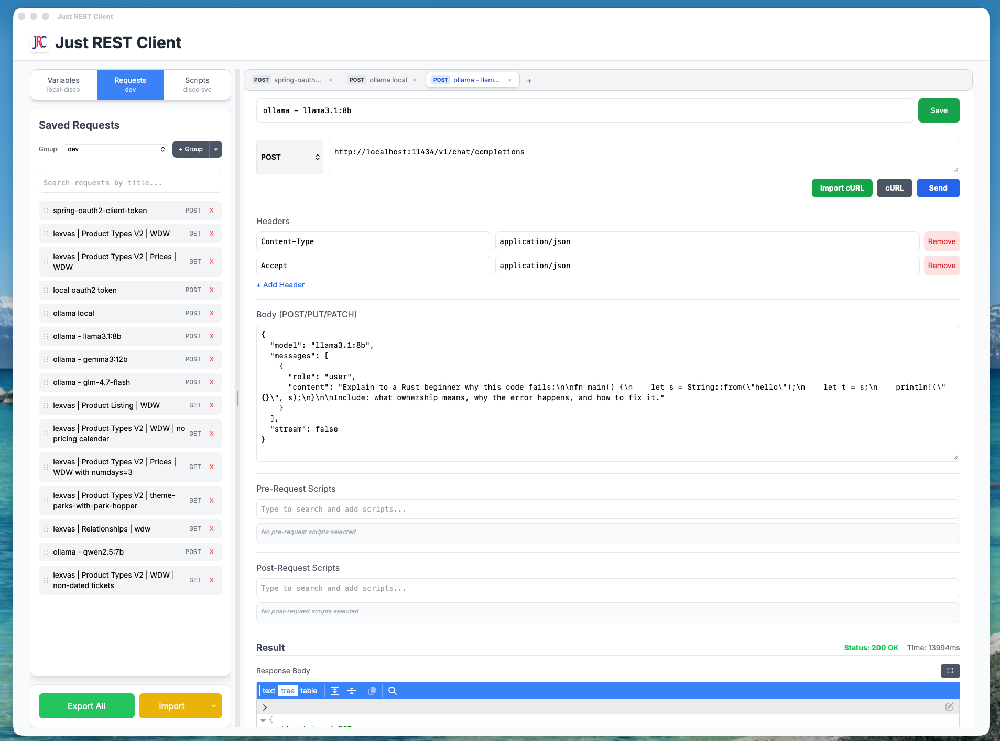

A lightweight, modern desktop app for testing REST APIs — with scripting, variable templating, and Postman import. No CORS. No fuss.

Powerful features without the bloat.
Built on Tauri — HTTP requests go through the native layer, so you can call any API without browser CORS limitations.
Use {{variableName}} in URLs, headers, and bodies. Organize variables by environment groups (dev, staging, production).
Run JavaScript before and after requests. Fetch OAuth tokens, extract response data, chain requests — with full async/await support.
Import your existing Postman collections (v2.1) including variables, requests, and scripts. Or paste a cURL command to create a request instantly.
Organize requests, variables, and scripts into groups. Switch environments with a single click. Search across everything in real time.
Built-in Model Context Protocol server lets Claude and other AI clients list and execute your saved requests programmatically.
Get the latest release for your platform.
| Platform | File | Notes | |
|---|---|---|---|
| 🍎 macOS | Just.REST.Client_*_aarch64.dmg | Apple Silicon (M1/M2/M3/M4) | Download |
| 🪟 Windows | Just.REST.Client_*_x64_en-US.msi | MSI Installer | Download |
| 🪟 Windows | Just.REST.Client_*_x64-setup.exe | Portable executable | Download |
| 🐧 Linux | Just.REST.Client_*_amd64.AppImage | Universal — works on all distros | Download |
| 🐧 Linux | Just.REST.Client_*_amd64.deb | Debian / Ubuntu | Download |
Intel Mac users: request a build or build from source below.
.dmg fileApple Silicon only. Intel Mac users should build from source.
.msi installerOr use the .exe for a portable version with no installation required.
chmod +x Just.REST.Client_*.AppImage
./Just.REST.Client_*.AppImagesudo dpkg -i Just.REST.Client_*.debRequires Node.js 20+ and Rust (stable).
# Clone the repo
git clone https://github.com/nicechester/just-rest-client.git
cd just-rest-client
# Install dependencies
npm install
# Run in development mode
./dev.sh
# Build production app
./build.shEverything you need to get the most out of Just REST Client.